Circuit Events
Every so often the board throws a short challenge at you: a Circuit Event. There are four kinds — GATE, RELAY, HOT ZONE and LIVE WIRE — and each has variants. Winning one pays points and charge and opens a module choice.
When events come
- The first event starts after 95 steps (about 14.2 s) of free play.
- Between events there are 95–140 steps of free play. The pause shrinks by 6 steps with every event you complete, but never below 70. If an event ended while you were at ×5 or more, you get 18 extra calm steps.
- An event never starts while you are inside a gap, and new structures appear at least 4 cells from your head, never right in your path. If the board is too crowded the event waits a moment and tries again.
- The live event's name, progress and timer are shown in the bar under the meter. The first time you meet each kind, a card explains it.
- Running out of time just ends the event without a reward. Structures disappear when the event ends (relay posts stay a while longer).
Which event (Ranked and Daily)
The kinds come from a shuffled bag that never gives the same kind twice in a row. LIVE WIRE joins only after the first 2 events. Harder variants unlock with the run's intensity — the number of events completed so far, plus one while you are at ×5 or more. The tables below give the intensity each variant needs and its weight in the draw. Campaign levels list exactly which events and variants they use (see all levels).
Modifiers can be added on top:
| Modifier | For | From intensity | Chance | Effect |
|---|---|---|---|---|
narrow | GATE | 4 | 30% | every door is one cell deeper (up to 4) |
drift | GATE | 5 | 30% | the gate slides sideways one cell every 7 steps (DRIFT GATE) |
fast | LIVE WIRE | 5 | 40% | the wire moves every 2 steps instead of every 3 |
GATE

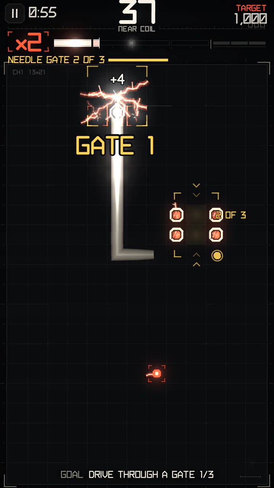

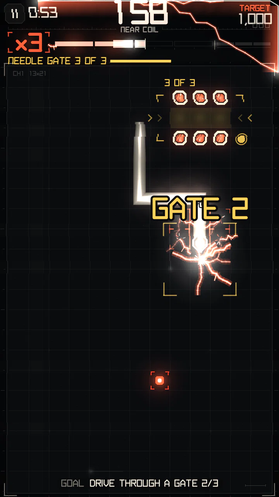

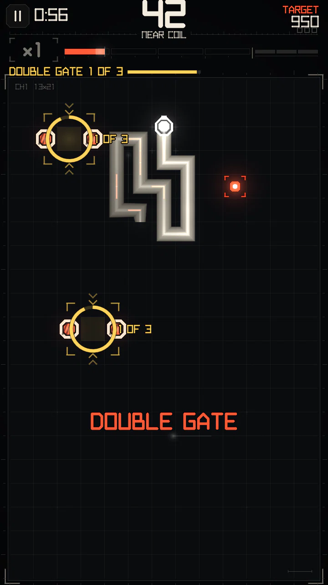

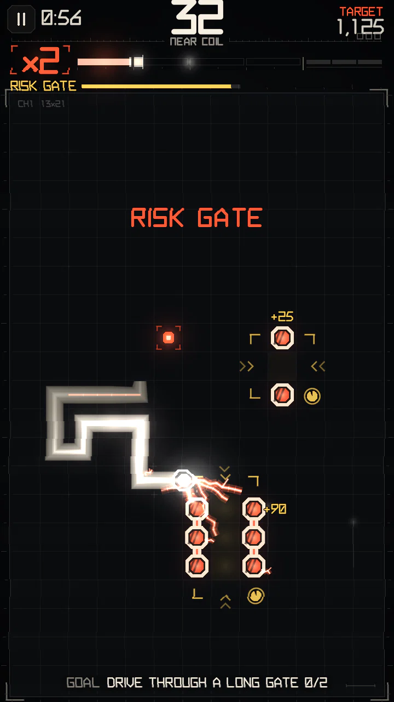
A gate is a door — a straight passage 1–4 cells long — with a lethal pylon on each side of every door cell. To pass it, drive into the door and out the far side straight through, without turning inside. Either direction works. The door's length is its depth; deeper doors pay more.
- Each gate must be passed within 85 steps (about 12.8 s); the timer restarts for the next gate of a course.
- A new door appears 4–11 cells from your head. A pylon is never placed in your lane within 6 cells ahead, or in the lanes beside it within 2 cells.
- Pylons are conductors: brushing them is a close call (paid in full), driving between them counts as tight steps. A gap of pylons alone is not a maneuver — the gate pays for it.
| Gate in the course | 1st | 2nd | 3rd |
|---|---|---|---|
| Door depth | 1 | 2 | 3 |
| Points (× multiplier) | 30 | 60 | 120 |
| Charge | 60 | 90 | 130 |
Variants
| Variant | On screen | Unlocks at intensity | Weight | What changes |
|---|---|---|---|---|
course | NEEDLE GATE | 0 | 4 | three gates in a row, doors 1, 2 and 3 cells deep |
chain | GATE CHAIN | 1 | 3 | each next gate stands 3–8 cells straight past the last exit |
risk | RISK GATE | 2 | 3 | one shallow door and one deep door; only the first one you drive through counts |
double | DOUBLE GATE | 3 | 2 | two doors at once, take either |
echo | ECHO GATE | 3 | 2 | one gate: through, back, through again |
- RISK GATE: shallow door (depth 1) +25 points and 40 charge; deep door (depth 3) +90 points and 200 charge. The first one you pass ends the event.
- ECHO GATE: one door of depth 2, passed 3 times — there, back the other way, there again — each within 60 steps. The passes pay 40, 70, 110 points and 70, 100, 150 charge. One pass is already a win; the rest is bonus.
- GATE CHAIN: each next gate appears 3–8 cells straight ahead of where you left the last one, lined up with your exit.
RELAY

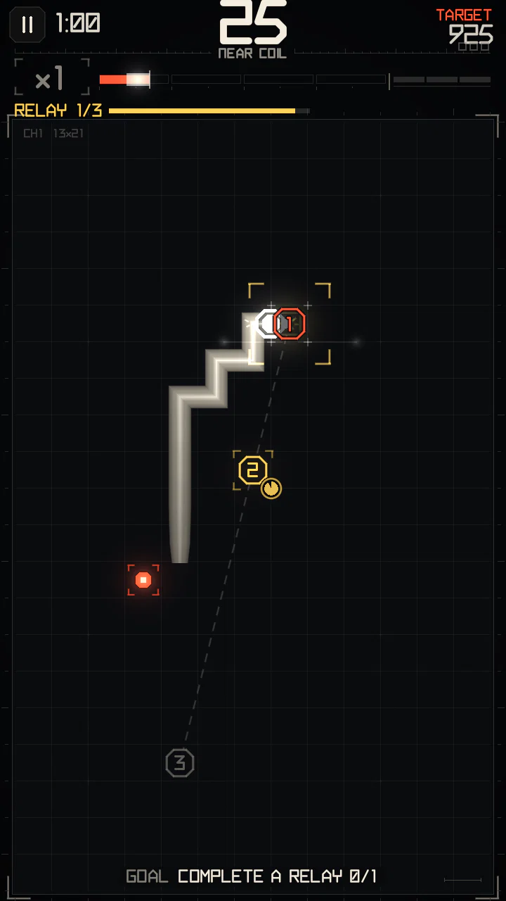

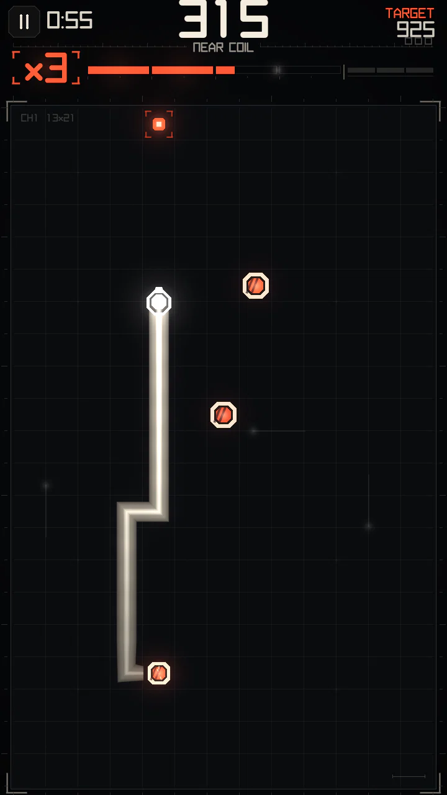

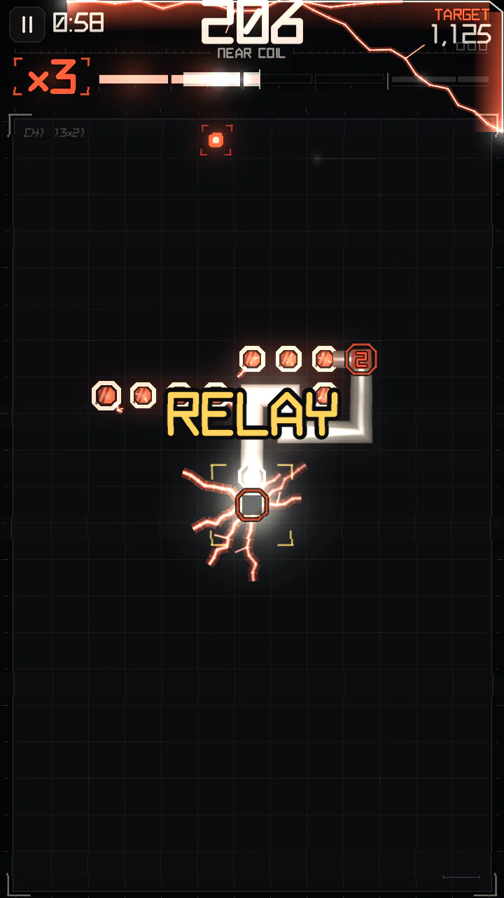
Numbered terminals appear around the board, at least 5 cells apart. Steer your head onto them in number order before time runs out.
- Time: 135 steps (about 20.2 s) for three terminals, 35 steps more for each extra one.
- Each terminal: +15 points (× multiplier) and +30 charge.
- Completion: +90 points and at least 120 charge — always enough to reach the next multiplier (as long as you are below ×5). The harder variants (four, fast, dark, live) pay ×1.5 on completion.
- A touched terminal becomes a live post once your body has left it: lethal, but good for close calls. Posts stay 70 steps (about 10.5 s) after the relay ends (110 with a bridge).
Variants
| Variant | On screen | Unlocks at intensity | Weight | What changes |
|---|---|---|---|---|
three | RELAY | 0 | 4 | three terminals in number order |
timed | FAST RELAY | 2 | 2 | two thirds of the time, bigger payout |
four | RELAY 4 | 3 | 2 | four terminals, more time, bigger payout |
hidden | DARK RELAY | 3 | 2 | the last terminal shows only when it is next |
bridge | BRIDGE RELAY | 4 | 2 | on completion the terminals are joined by live bars |
moving | MOVING RELAY | 5 | 2 | the last terminal side-steps every 6 steps |
HOT ZONE

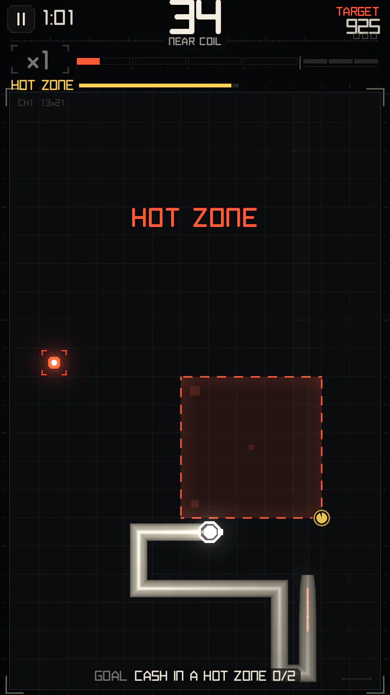

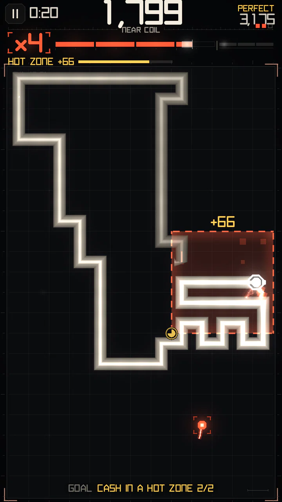

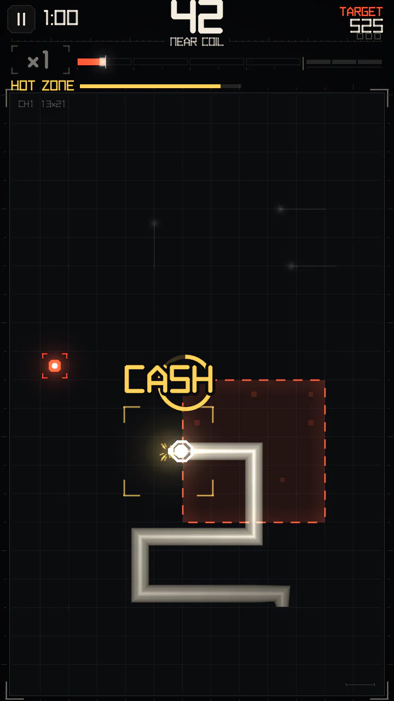
A 5×5 square. While your head is inside it, charge and points bank up; leave the square to cash in (CASH). You can go in and out several times. If the zone overloads while your head is still inside, the bank burns (BURNED).
- The zone lives 84 steps (about 12.6 s); the last 18 steps are a warning.
- Every step inside banks 2, 3, 4, 6 charge (rising by quarter of the zone's life) and 2 points.
- Everything you earn inside is paid as usual and 50% of it is banked on top.
- Inside the zone close calls charge in full at any multiplier, and hunger does not apply.
- Banked points are multiplied by your multiplier when you cash. The event counts as won once you have cashed at least 70 charge.
Variants
| Variant | On screen | Unlocks at intensity | Weight | What changes |
|---|---|---|---|---|
static | HOT ZONE | 0 | 4 | the plain zone |
escalate | RISING ZONE | 2 | 2 | lives longer; banks twice as fast in its second half |
drift | DRIFT ZONE | 3 | 2 | slides diagonally, one cell every 9 steps |
shrink | SHRINK ZONE | 3 | 2 | closes to 3×3 at half time |
preserve | HOLD ZONE | 4 | 2 | no charge drain while your head is inside |
unstable | UNSTABLE ZONE | 5 | 2 | random lifetime, very short warning |
RISING ZONE lives 100 steps and banks ×2 in its second half. UNSTABLE ZONE lives 66–96 steps and warns only 7 steps before.
LIVE WIRE

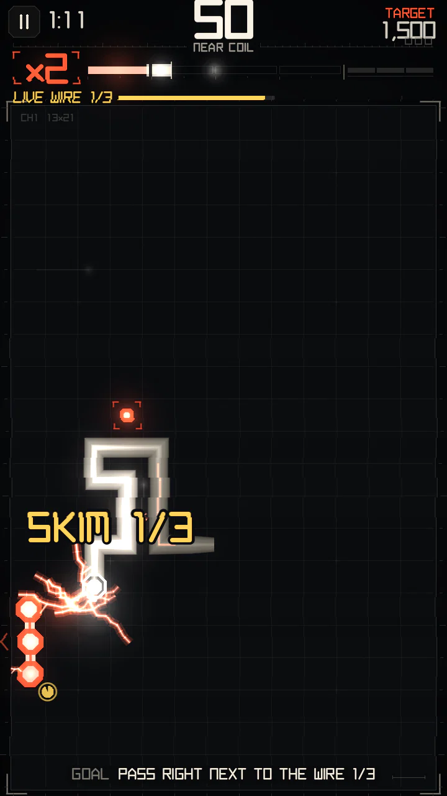
A lethal bar 3 cells long slides back and forth along a lane, one cell every 3 steps. Pass right next to it 3 times within 140 steps (about 21 s). Touching it ends the run.
- Skims count at least 5 steps apart.
- Each skim: +25 points (× multiplier) and +45 charge; beating the wire: +100 points and +110 charge.
- The wire never moves into or next to your head, nor onto the 3 cells straight ahead of it.
Variants
| Variant | On screen | Unlocks at intensity | Weight | What changes |
|---|---|---|---|---|
patrol | LIVE WIRE | 0 | 4 | one 3-cell bar |
long | LIVE WIRE | 3 | 2 | one 5-cell bar |
twin | LIVE WIRE | 4 | 2 | two bars, one lane each |